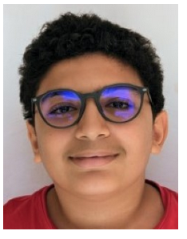
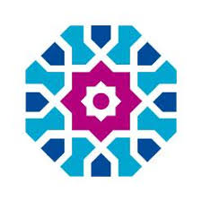

El Arja Omar
À l'été 2018, j'ai eu l'opportunité de participer à un stage d'intégration à la programmation à l'Université Al Akhawayne à Ifrane. Ce stage m'a permis de plonger dans le monde de la programmation et de renforcer mes compétences techniques. J'y ai appris les bases de plusieurs langages de programmation et découvert des outils utiles dans le développement logiciel. Ce fut une expérience précieuse qui m'a permis d'élargir mes connaissances et de mieux comprendre les exigences du domaine, tout en affinant ma capacité à résoudre des problèmes complexes de manière créative.
 Maroc, Université Al Akhawayne
Maroc, Université Al Akhawayne 


Compétences
 HTML
HTML
 CSS
CSS
 JavaScript
JavaScript
 Illustrator
Illustrator
 Photoshop
Photoshop
 Figma
Figma
Expériences Professionnelles
 |
J'essaie d'apprendre le code et la programmation depuis 2018 |
Passionné par l'informatique et le développement, je m'efforce d'améliorer continuellement mes compétences en NSI (Numérique et Sciences Informatiques). J'explore divers langages de programmation, approfondis mes connaissances en algorithmes et structures de données, et m'entraîne à résoudre des problèmes complexes. Mon objectif est de renforcer ma maîtrise du développement web et logiciel tout en adoptant de bonnes pratiques en ingénierie informatique. |
|  | Classe de NSI Mme ED Bali PROMO 2024-2025 |
En parallèle de mes études au lycée, j'essaie de m'améliorer un maximum pour pouvoir profiter de mes compétences en programmation et en faire mes futures études, voire mon futur métier. Ce projet a renforcé mes compétences en développement web et web design. |